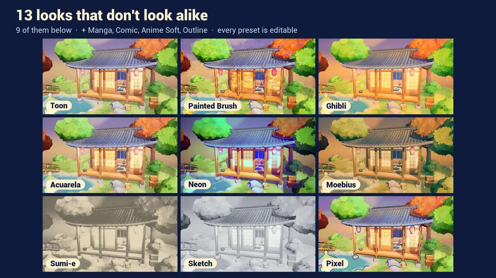
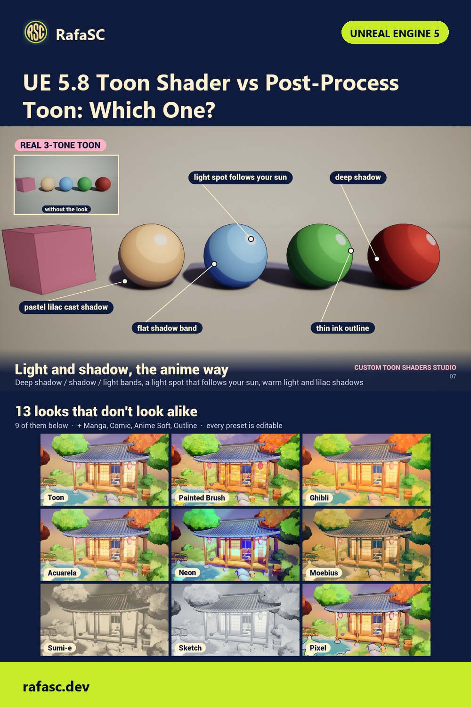

Comparison · Updated November 2026
Best Toon Shader for Unreal Engine 5 (2026 Comparison)
In 2026 there are four real ways to get a toon look in Unreal Engine 5: the built-in Substrate toon shading added in 5.8, a post-process pack that restyles any scene without touching materials, the free Lite version of a pack, and free community shaders from itch.io. Each solves a different problem. This page compares them honestly.
By RafaSC, 3D and technical artist · Updated · 8 min read

I make and sell Custom Toon Shaders Studio, one of the options below. Read this knowing that. The information about the built-in shader comes from Epic's release notes and third-party write-ups, not from my own production tests of that specific feature.
What makes a good toon shader?
Three things actually matter in a production context. First, scope: does it restyle the whole scene at once, or do you have to author each material? A post-process shader wins here when you work with bought assets or large scenes. The built-in per-material approach wins when you are building hero characters from scratch and want exact surface control.
Second, outlines: flat-band shading and ink lines are separate problems in Unreal Engine. The engine's built-in toon feature handles surfaces only. For ink lines you need a post-process edge pass or inverted-hull meshes regardless of which approach you pick.
Third, runtime style switching: some games change look mid-session for a dream sequence, a photo mode, or a flashback. Only a post-process shader can be toggled or blended at runtime with one parameter. Per-material shading is locked at build time unless you swap the material.
Option 1: Custom Toon Shaders Studio (RafaSC) — post-process, 13 styles
This is my own pack, so I am biased. I will say what it does and where it does not work, and you can judge.
Custom Toon Shaders Studio is a post-process volume actor that carries 13 styles: Toon, Anime Soft, Anime Hard, Comic, Neon, Ghibli Warm, Ghibli Cold, Watercolor, Moebius, Sumi-e, Sketch, Painted Brush and Outline. You drop one actor, set one Style parameter, and the whole scene changes. It does not modify any material.

- Pro: works on any scene, any bought assets, Nanite, Lumen, Substrate, TSR
- Pro: outlines included; tone bands track the sun direction
- Pro: switch style at runtime with one Blueprint node
- Pro: Custom Depth stencil for per-mesh exceptions (foliage, UI elements)
- Con: needs the deferred renderer — does not work with Forward
- Con: screen-space effect; character edges can flicker at very low resolution
- Con: costs between 0.29 ms (Outline) and 1.86 ms (Painted Brush) on an RTX 3080 at 1920×1080
- Con: $29.99 on Fab
Option 2: UE5 built-in Toon BSDF (Substrate, free in 5.8)
Unreal Engine 5.8 added toon shading directly inside Substrate, the new material model that ships with the engine. You enable Substrate in Project Settings and then set a material's shading model to Toon. The shading bakes flat bands into how that surface responds to real lights in the scene.
Because it works in the material and lighting stage, the bands follow actual light position and shadow casters with per-material precision. That is something a screen-space post-process cannot fully replicate. According to external write-ups from July 2026, before this feature existed you had to maintain an engine fork or custom shading model to achieve similar per-material banding.
- Pro: completely free, part of the engine
- Pro: per-material precision; bands follow real lights
- Pro: works with Lumen and Forward renderer
- Con: requires Substrate, which is a 5.8 feature — does not work on 5.5 or earlier
- Con: outlines are not included; you still need a post-process or inverted-hull pass
- Con: you must author or convert every material you want to look toon; bought assets need changes
- Con: described as a version-one feature in mid-2026 write-ups; expect rough edges with translucency and some light types
- Con: no runtime style switching without changing the material itself
I have not tested my post-process pack on top of materials using the built-in toon shading. The two approaches target different rendering stages and may or may not conflict depending on what you are doing.
Option 3: Post-process cel shader — free with Toon Studio Lite
Toon Studio Lite is the free version of my pack. It has three looks: 01 Toon, 02 Anime Soft and 13 Outline. Everything else about how it works is the same as the full pack: one actor, no material changes, deferred renderer, Lumen and Nanite compatible. The free listing is on Fab.

- Pro: free — no payment needed
- Pro: works on any scene and any assets, same as the full pack
- Pro: UE 5.8 tested and listed on Fab
- Con: only three looks instead of thirteen
- Con: same deferred-renderer requirement as the full pack
For setup steps and limits, see the full setup guide for the free toon shader.
Option 4: Free community shaders
Several free toon shaders exist on itch.io and in the Epic forums. The most visible as of 2026 is a cel/toon shader pack by Eren Eker on itch.io: a zip with three materials, pay-what-you-want, around 200 words of documentation, and no stated version compatibility. The pack exists and works for some people; support and updates are not guaranteed.
- Pro: completely free, no account required on some platforms
- Con: minimal documentation; version compatibility unclear
- Con: community support only; no guaranteed updates for new UE versions
- Con: typically one or two styles with no runtime switching
These are worth trying for a prototype or a solo learning project. For a shipped game I would use an engine feature or a maintained pack.
Which toon shader is right for you?
The honest answer depends on three questions: what version of UE you are on, whether you are building your own art or working with bought assets, and whether you need outlines.
| Option | Price | UE version | Outlines | Works on bought assets | Runtime style switch | Best for |
|---|---|---|---|---|---|---|
| Custom Toon Shaders Studio | $29.99 | 5.8 | Yes | Yes | Yes | Shipped games, mixed scenes, photo mode |
| UE5 built-in Toon BSDF | Free (engine) | 5.8 only | No | No (must convert) | No | Hero characters you are authoring from scratch |
| Toon Studio Lite (free) | Free | 5.8 | Yes (Outline look) | Yes | Limited (3 looks) | Prototypes, learning, tight budget |
| Community shaders (itch.io) | Free | Varies | Varies | Varies | No | Quick tests, learning projects |
If you are on UE 5.8 and building new art from scratch, try the built-in Substrate toon shading first — it costs nothing and gives per-material precision. If you work with any bought assets, or you want outlines and style switching without touching each material, a post-process pack is the faster path.
If budget is the constraint, start with Toon Studio Lite. It has the same underlying system as the full pack. You can upgrade to the full thirteen looks later if you need them.
Watch it in action
Custom Toon Shaders Studio: 13 styles, one actor, no material changes · Watch on YouTube
Frequently asked questions
What is the best toon shader for Unreal Engine 5?
It depends on your project. The UE 5.8 built-in Substrate toon shader is free and handles per-material surface shading well for new art you are authoring. A post-process pack like Custom Toon Shaders Studio works on any existing scene without changing materials and adds outlines and style switching at runtime. Free community options exist but offer fewer styles and no guaranteed updates.
Does UE5 have a built-in toon shader?
Yes. Unreal Engine 5.8 added toon shading as part of Substrate. It stylizes surfaces on a per-material basis and works with Lumen lighting. Outlines are not included: you still need a post-process or inverted-hull pass for ink lines.
Can I get a toon shader for UE5 for free?
Yes. Toon Studio Lite by RafaSC is a free listing on Fab with three looks: Toon, Anime Soft and Outline. The UE 5.8 Substrate toon shading is also free as part of the engine. Both require Unreal Engine 5.8.
Does the post-process toon shader work on assets I bought on Fab or the marketplace?
Yes. A post-process toon shader reads the finished frame and does not require you to change individual materials. It works on bought assets, Nanite meshes and mixed scenes. The only requirement is the deferred renderer, which is the UE5 default.
Related guides

Save this guide for later. Products used on this page: Custom Toon Shaders Studio.